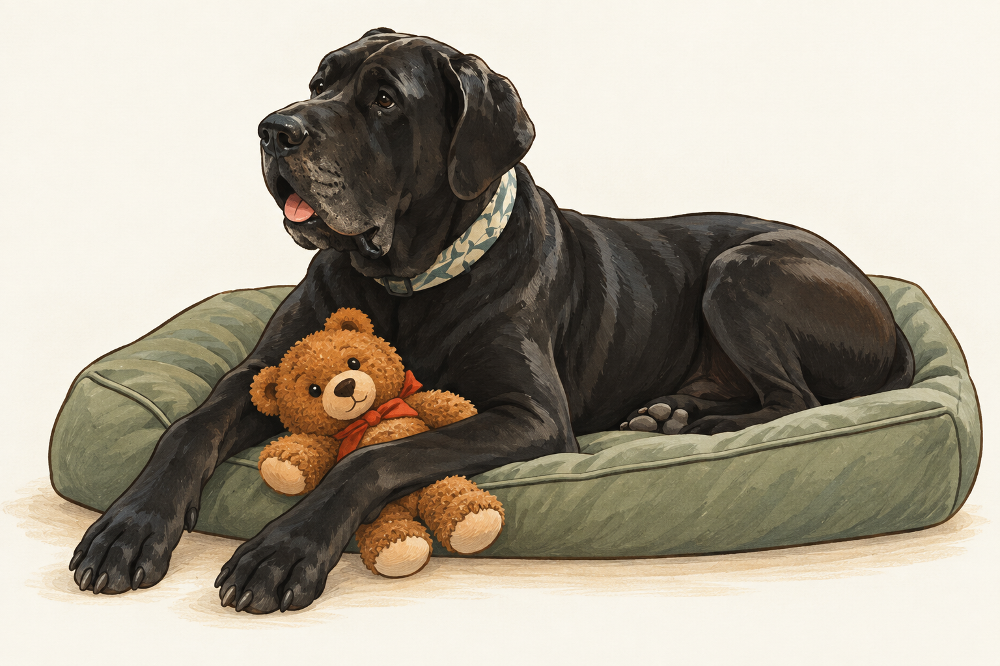

Capture the moment.
Ring motion events trigger clip downloads and frame capture. No continuous camera stream.
Now with a native Mac app · Open source
Turn your Ring camera clips into a record of where your animal was last seen. A guided Mac app brings together local vision, meaningful alerts, and a quick check on your wrist.
Native macOS preview. Runs on your Mac. Built in the open.

Meet Winston · The original inspiration
This gentle giant inspired Animal Tracker. His dark coat, floppy ears, and patterned collar are reminders that the question is personal: is that my dog?
An AI-generated cartoon inspired by Winston’s reference photos.Animal Tracker for Mac · Preview 0.2
Connect your cameras, introduce your animal, and get the engine running—all from a native Mac app.
Recognition starts with a specific animal, not a generic “dog” label.
A collar can change. Include features that will still identify your animal without it.
From motion to meaning
Recognizing an animal is only the beginning. Animal Tracker compares sightings with reference photos, then uses your camera layout to follow confirmed movement.
Ring motion events trigger clip downloads and frame capture. No continuous camera stream.
Apple Vision and DINOv2 compare visual evidence with an enrolled reference gallery. Uncertain events wait for review.
A deterministic tracker uses neighboring zones, travel times, and confidence thresholds to infer transitions.
Designed to be honest
Timestamped observations are kept separately from inferred position. A missed camera event never becomes an invented sighting.
Run vision on your Mac. Optional Claude or Codex review sessions can inspect uncertain frames and help build a better reference gallery. Review sessions may send selected images to the provider.
The watchOS app includes recent sightings, a complication, and a Siri check-in intent. Physical-device setup and APNs credentials are needed for native push delivery.
Make it yours
The Mac app is available as a developer preview. You’ll need macOS 14 or later, a Mac that stays on while tracking, and Ring cameras with access to recorded clips. Xcode command-line tools are needed to build the app; the app can download and prepare Python for you.
Build and set up the Mac appNo notarized public download yet. Builds are currently for local testing; a Developer ID signature and notarization are still needed for smooth distribution.
git clone https://github.com/johnm555/AnimalTracker.git
cd AnimalTracker
scripts/build-mac-app.sh
open "dist/Animal Tracker.app"Move the app to Applications, then choose Download & prepare engine. The setup assistant takes it from there.
Open Animal Tracker from the Applications folder where you installed it. For a preview installed in your personal Applications folder, press ⌘⇧G in Finder and enter ~/Applications.
Prefer the terminal? The command-line setup guide is still available. Building and installing the separate Watch app requires Xcode signing and device pairing.
Know before you install
The native Mac setup app, automatic engine preparation, Ring event capture, local vision and review queues, timestamped sightings, diagnostics, startup/recovery controls, and Watch app source.
Notarized Mac releases, real-account and device acceptance testing, broader model evaluation, and AirTag polling. Each installation tracks one enrolled animal; separate tracking for multiple dogs is not yet supported.
Detection needs evaluation on your own cameras. Mac setup generates an API token and defaults to local access; phone and Watch access is an explicit LAN option. This is not a substitute for supervision or an animal safety system.
Reference photos, reviewed examples, and evaluating the local models.
Build with usFollow development, report a problem, or help with an open issue.